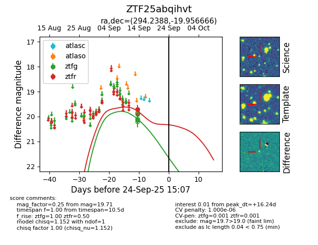
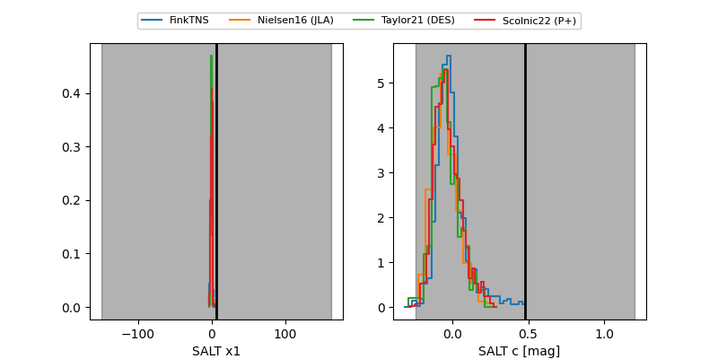

FINK: ZTF25abqihvt
Lasair: ZTF25abqihvt
ALeRCE: ZTF25abqihvt
ZTF25abqihvt (ztf,fink)
equatorial (ra, dec) = (294.2388,-19.95667)
galactic (l, b) = (19.5513,-18.70436)


last ztfg=19.91, ztfr=19.71
2 ztfg, 1 ztfr detections